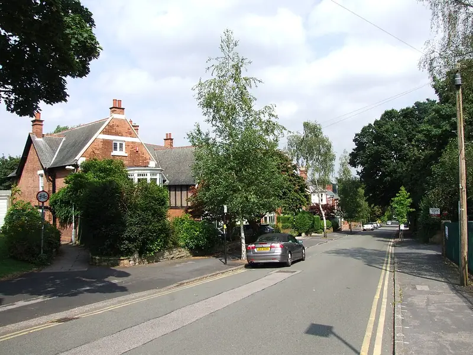

Recent cases in Sutton Coldfield
- Lindridge Road, Reddicap, August 2024. Birmingham Live reported around 500 plants inside an empty, boarded-up cottage earmarked for demolition. The growers had been unscrewing the metal window sheets to get in and screwing them back. The electricity was bypassed. Residents raised the alarm through a local councillor.
- Gate Lane, Boldmere, March 2023. 233 plants were found at an address just off Boldmere Road, the area's main shopping street. West Midlands Police warned at the time that plants grown upstairs can cause floorboards to rot, with a danger of collapse.
- Freeman Drive, Reddicap, November 2022. 183 plants and growing equipment in a quiet cul-de-sac next to John Willmott School. The force said the plants were seized for forensic examination and then destroyed.
- Middleton Road, Streetly, April 2019. Around 450 plants in a large detached house. A neighbour told Birmingham Live that residents had tried to report the property eight times in nine months.
Two lessons stand out. Big houses mean big grows, with a lot of waste and a lot of damp. And empty or boarded-up property is not safe just because it is locked.
Which council is it?
Sutton Coldfield has been part of the City of Birmingham since 1974, so licensing, environmental health and planning sit with Birmingham City Council. The Royal Sutton Coldfield Town Council, set up in 2016, is a parish-level council and does not run housing licensing.
The B74 postcode is the catch. It covers Four Oaks and Little Aston as well as Streetly, and Streetly is in Walsall, while Little Aston is over the border in Staffordshire. The Middleton Road case above was in Streetly. Check the council tax bill before you contact anyone about a licence or a skip.
Licensing in Sutton Coldfield
None of the Sutton Coldfield wards are in Birmingham's selective licensing scheme, which covers 25 of the city's 69 wards. So a house let to a single family does not need a selective licence. HMOs are different. Since 5 June 2023, Birmingham's additional HMO licensing covers the whole city, including Sutton, for homes shared by three or four people from two or more households. Larger HMOs need a mandatory licence. If a licensed HMO was used for a grow, the repairs have to bring it back to licence standard: working fire doors and alarms, safe electrics and no serious damp.
Larger houses, lofts and cellars
Much of Sutton's housing is bigger than the city average: Victorian and Edwardian villas in Four Oaks and Boldmere, interwar semis and large detached houses on generous plots. That changes the job:
- More rooms can be used, and lofts, cellars, garages and outbuildings are all worth checking.
- Waste volume is higher. A driveway helps, because a skip on private land does not need a highway permit. A skip on the road does.
- Neighbours notice less. Detached houses with long gardens and hedges hide light and noise better, which is one reason the Streetly grow ran for months.
- Period features cost more to put right. Plaster, cornicing and original joinery damaged by damp are slower and dearer to repair than plasterboard.
Empty and inherited properties
Probate properties and houses waiting for sale or redevelopment can sit empty for months. The Lindridge Road grow was in exactly that kind of building. If you own or manage one:
- Check your unoccupied property cover. Many policies change after 30 or 60 days empty and require regular inspections.
- Inspect inside, not just from the road. Look at the meter, the loft hatch and any rooms you cannot see from a window.
- Ask neighbours to call you, not just the police, if they see activity.
Who to contact in Sutton Coldfield
- West Midlands Police: 101, or 999 in an emergency. Sutton Coldfield has its own neighbourhood teams.
- 105 for the meter and the supply.
- Birmingham City Council: private rented sector and HMO licensing (linked below). For Streetly, Walsall Council.
- Stay Energy Safe to report suspected energy theft anonymously.
Questions landlords ask
Is Sutton Coldfield in Birmingham's selective licensing scheme?
No. None of the Sutton Coldfield wards are in the 25 selective licensing wards. Birmingham's city-wide additional HMO licence still applies to homes shared by three or four people from two or more households.
My property is in Streetly. Do you cover it?
Yes. Streetly has a Sutton Coldfield postcode but is in Walsall, so Walsall Council's rules apply. Give us the full postcode and we will match a specialist who covers it.
The house was empty and boarded up. Will my insurer pay?
It depends on your policy's unoccupancy and inspection conditions. Report it promptly and ask the insurer in writing what they need. Our insurance guide explains how these conditions have been applied.
What we can arrange in Sutton Coldfield
Guides for Sutton Coldfield landlords
Other areas: Birmingham, Solihull, Wolverhampton, Coventry, Walsall, Dudley, Sandwell, West Bromwich.